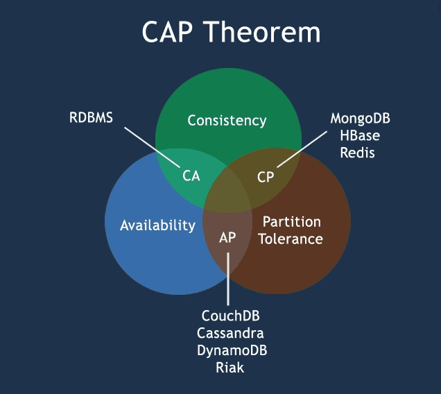
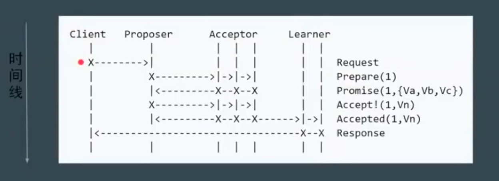
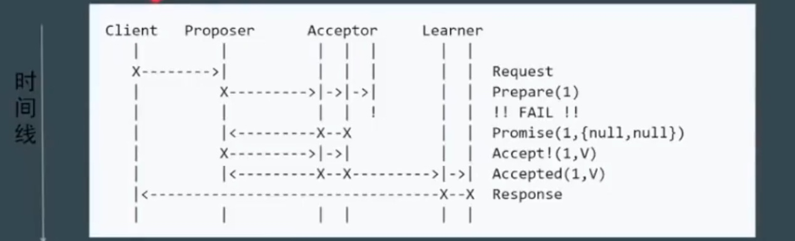
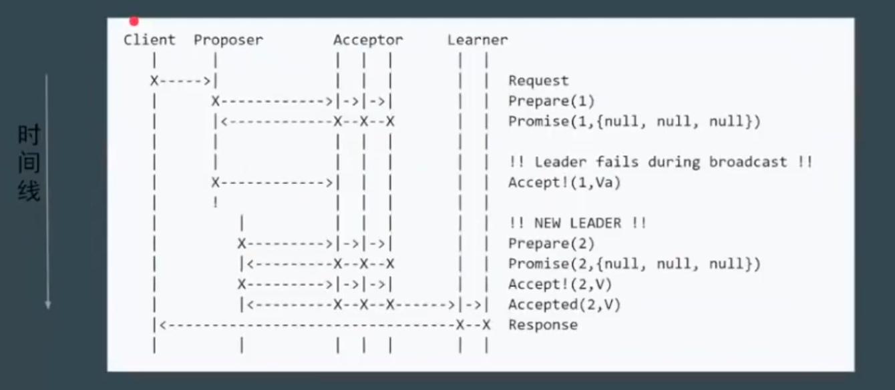
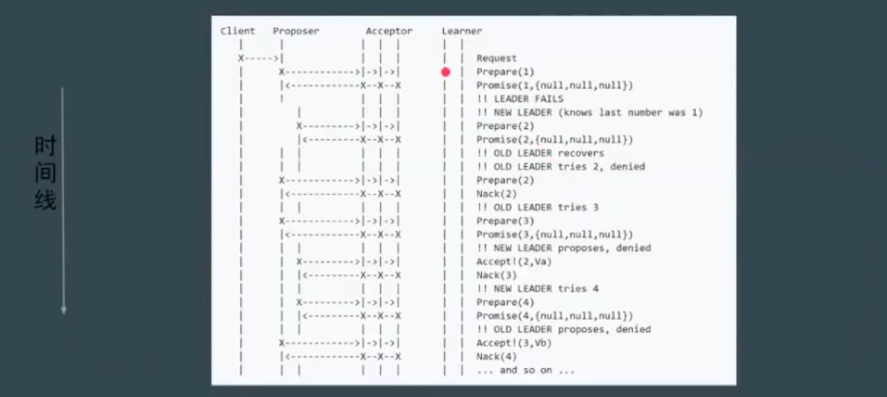
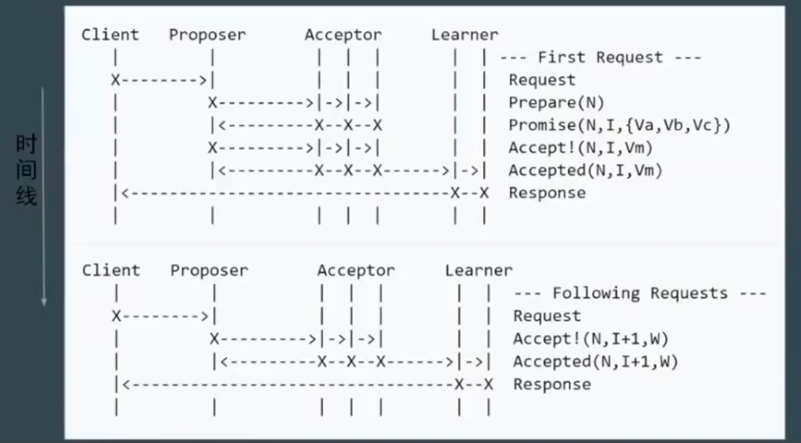
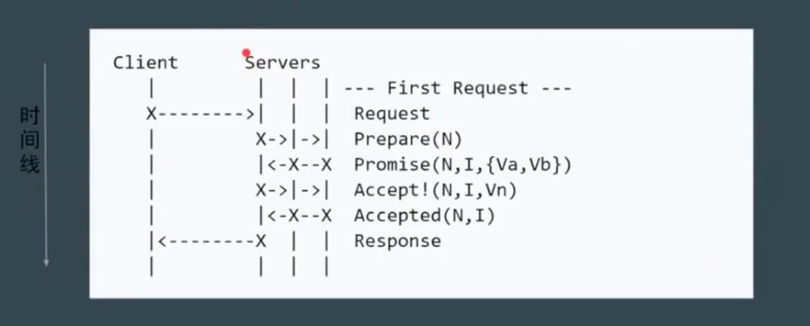

1、什么是一致性
CAP理论，对于一个分布式系统，不能同时满足一下三点
- 一致性（Consistency）
- 可用性（Availability）
- 分区容错性（Partition Tolerance）

2、一致性模型
- 弱一致性
- 最终一致性
- DNS（Domain Name System）
- Gossip（Cassandra的通信协议）
- 强一致性
- 同步
- Paxos
- Raft（multi-paxos)
- ZAB（multi-paxos）
数据不能存在单点上
分布式系统对 fault tolorence 的一般解决方案是 state machine replication
state machine replication的公式（consensus）算法
paxos其实是一个共识算法。系统的最终一致性，不仅需要达成共识，还会取决于client 的行为
强一致性算法---主从同步
- master接受写请求
- master复制日志到slave
- master等待，知道所有从库返回成功
不足之处： 一个节点失败，master阻塞，导致整个集群不可用，保证了一致性，但是可用性非常低
强一致性算法---多数派
基本思路：每次写都保证写入大于N/2个节点，每次度保证大于N/2个节点中读
不足之处： 并发环境下，无法保证执行指令的顺序，系统正确性不能得到保证，这种算法顺序非常重要
强一致性算法---Paxos
由来
Lesile Lamport，Latex的发明者。为描述Paxos算法，Paxos的坐着 lamport 虚拟了一个叫做Paxos的希腊城邦，这个岛按照议会民主制的政治模型制定法律，但是没有人愿意将自己的全部时间和精力放在这种事情上。所以无论是议员或者递纸条的服务员都不能承诺别人需要时一定会出现，也无法承诺批准决议或者传递消息的时间。
Paxos
- Basic paxos
- multi paxos
- fast paxos
basic Paxos 角色介绍：
- client：系统外部角色，请求发起者，比如民众，不参与投票的人
- Propser： 接受client请求，向集群提出提议（propose）。并在冲突发生时，起到冲突调节的作用，像议员，替民众提出议案
- Accepetor（voter）： 提议投票和接受者，只有在形成法定人数（Quorum，一般即为majority多数派）时，提议才会最终被接受，像国会
- Learner： 提议接受者，backup，备份，对集群一致性没有影响，想记录员
basic Paxos 阶段步骤
- Phase 1a： prepare
proposer提出一个提案，编号为N，此N大于这个proposer之前提出提案编号。请求acceptors的quorum接受
- Phase 1b： Promise
如果N大于此acceptor之前接受的任何提案编号则接受，否则拒绝
- phase 2a： accept
如果达到了多数派，proposer会发出accept请求，此请求包含提案编号N，以及提案内容
- phase 2b：accepted
- 如果此acceptor在此期间没有收到任何编号大于N的提案，则接受此提案内容，否则忽略
基本流程：

部分节点失败，但达到了 quorums，3个人里面的2人接受提案

proposer失败场景

basic paxos 潜在问题： 活锁（liveness）或dueling，难实现、效率低（两轮rpc）

使用rundom的实际时间来让请求休息一下
multi Paxos:
加入新概念 Leader : 唯一的 propser 所有请求都需要经过leader

上面一轮是 要竞选出leader，下面一轮请求过来之后，只需要和选出来的leader交互就可以了。
进一步简化，减少角色

强一致性算法---raft